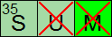
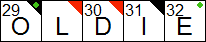

If the solution is not scrambled, the user is allowed to check and reveal answers in the grid. Using menu items and toolbar buttons, the user can check or reveal the current letter, word, or the entire grid. The user can also reveal only the incorrect letters in the grid.
If the user checks the grid, incorrect letters are show with a red X through them. When an incorrect letter is overwritten by any other letter the X is replaced by a black "flag" (a triangle) in the upper right corner of the square indicating that the square was checked and found to be incorrect at some point. When a letter is revealed, it gets a red flag in the upper right corner. XWord will not allow the user to overwrite a revealed letter.
 
XWord can optionally check the solution automatically, drawing an X through incorrect letters as you type. This option can be found on the solving page of the preferences dialog.
To check or reveal a section of the grid, click on Check Selection... or
Reveal Selection... from the Solution menu.
The cursor will turn into crosshairs allowing you to make a selection. Click
anywhere in the grid to start the selection, drag to make the selection, and
release the mouse to finish the selection. The selected area will be checked
or revealed. If you want to cancel the selection, press the Esc key.
Index | Back | Sourceforge | Download